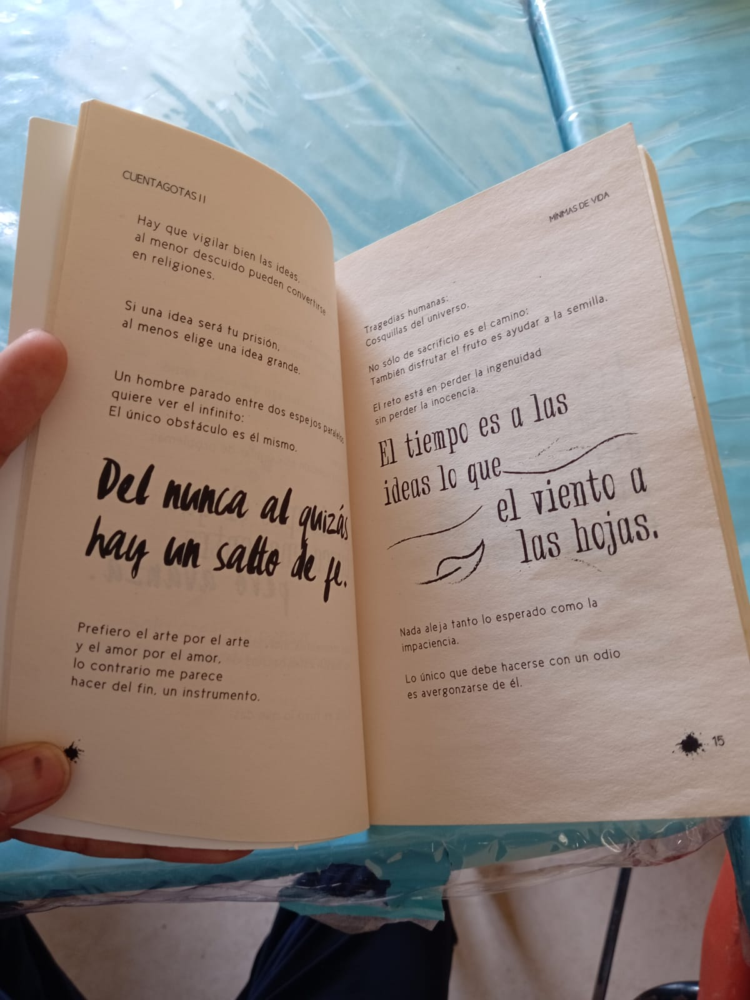
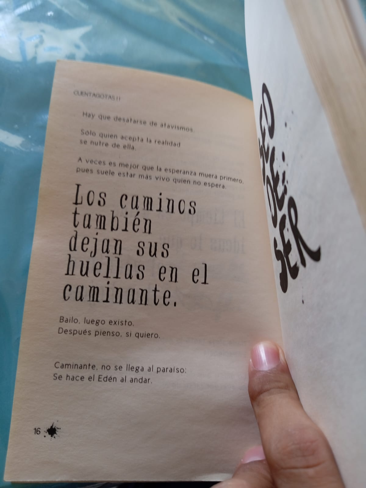
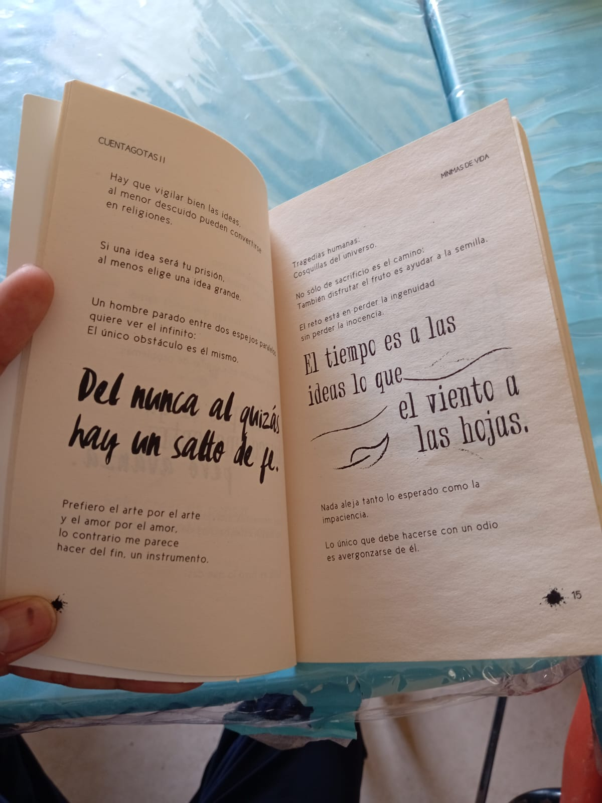
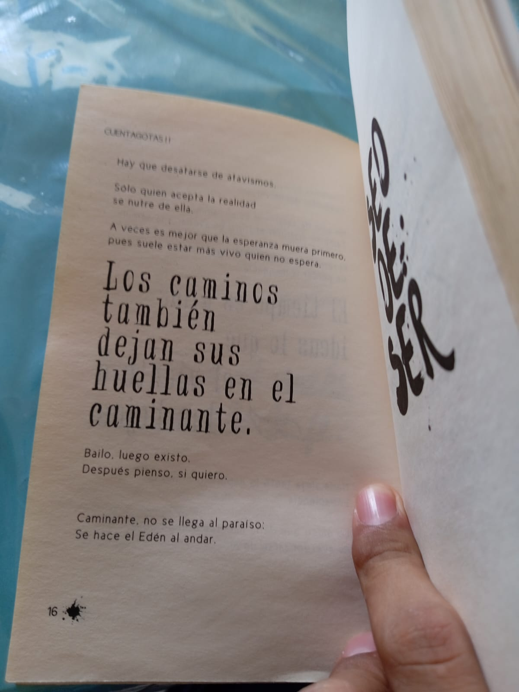

Bienvenido al Taller de Lectura
Este sitio está dedicado a mostrar el desarrollo del taller de lectura donde fomentamos la comprensión lectora, el pensamiento crítico y la creatividad en los estudiantes. Aquí encontrarás nuestras actividades principales y una galería con evidencias del trabajo realizado.
Actividades Destacadas
- Círculos de lectura: debates sobre libros leídos en grupo.
- Lectura dramatizada: representaciones escénicas de textos narrativos.
- Escritura creativa: creación de cuentos, poemas y ensayos.
- Club de lectura digital: participación en foros en línea para comentar lecturas.
Galería de Evidencias

 


